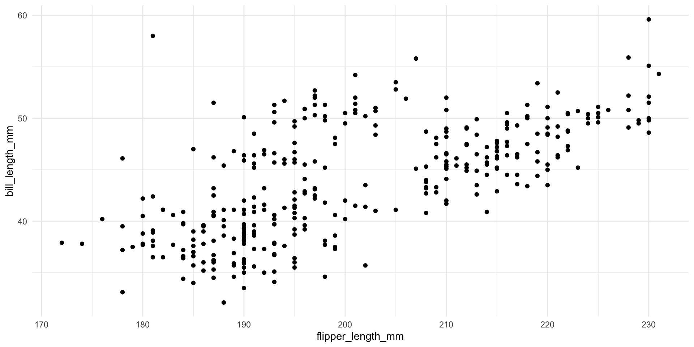
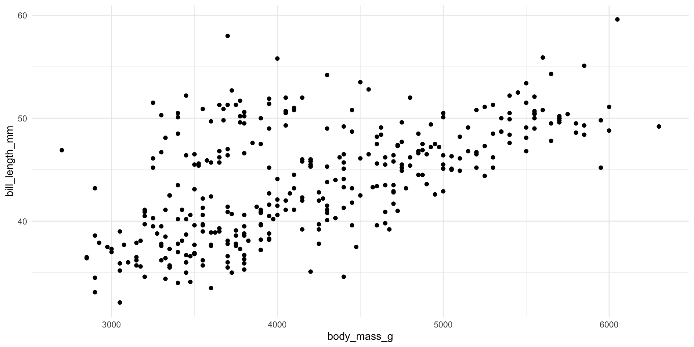

2025-05-13
FROM rocker/r-ver:4.1.0
WORKDIR /workspace
RUN R -e "install.packages('renv', repos='https://cloud.r-project.org')"
COPY renv.lock renv/activate.R /workspace/
RUN R -e "renv::restore()"
CMD ["/bin/bash"]docker build -t username/penguins-analysis:v1 .
docker login
docker push username/penguins-analysis:v1/workspace inside the container.---
title: "Palmer Penguins Analysis"
author: "Developer 2"
date: "2025-05-13"
output: html_document
---
::: {.cell}
```{.r .cell-code}
library(ggplot2)
library(palmerpenguins)
# Explicitly use palmerpenguins::penguins to avoid conflicts
ggplot(palmerpenguins::penguins, aes(x = flipper_length_mm, y = bill_length_mm)) +
geom_point() + theme_minimal()Warning: Removed 2 rows containing missing values or values outside the scale range (`geom_point()`).
:::
## Developer 2 - Render R Markdown
```r
rmarkdown::render("peng1.Rmd")## Body Mass vs. Bill Length
::: {.cell}
```{.r .cell-code}
ggplot(palmerpenguins::penguins, aes(x = body_mass_g, y = bill_length_mm)) +
geom_point() + theme_minimal()Warning: Removed 2 rows containing missing values or values outside the scale range (`geom_point()`).
:::
```sh
git add peng1.Rmd
git commit -m "Added second plot: Body Mass vs. Bill Length"
git push origin main✅ renv ensures package reproducibility.
✅ Docker ensures OS & R version consistency.
✅ GitHub & DockerHub enable collaboration.
✅ Bind mounting ensures local modifications persist.